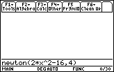
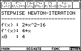
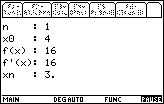
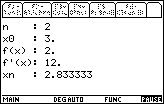
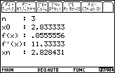
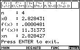

Description
The newton() command [.89p,
863byte] for the TI-89 calculator was written by students of the
computer
science
dept. FHZH to stepwise solve an expresion using the newton algorithm.
The manual way to solve the following simple expression using the
iterative Newton Formula:
2x2-16=0
looks as follows:
| n |
x0 (start value) |
f(x) (expression) |
f'(x) (derivative) |
xn (iteration) |
| 1 |
4 |
16 |
16 |
3 |
| 2 |
3 |
2 |
12 |
2.833333 |
| 3 |
2.833333 |
0.0555556 |
11.33333 |
2.828431 |
| 4 |
2.828431 | 0.0000481 |
11.31373 |
2.828427 |
You can easily use the following TI-89 command to calculate all of the
table entries above:
newton(2*x^2-16,4)
This looks as follows:






$Id: newton.html,v 1.11 2026/04/26 09:26:08 gloor Exp gloor $ |